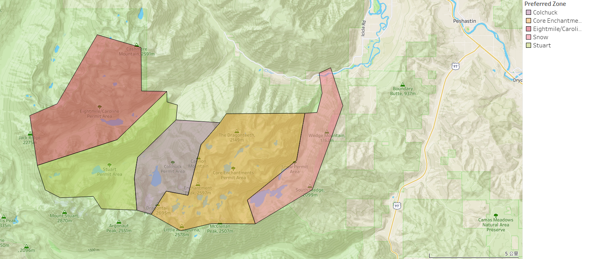

The Enchantments Lottery
Tableau | Python | Stroytelling | Visualization

Every year, thousands of hopeful hikers enter the Enchantments lottery, all dreaming of a few golden days in Washington’s alpine wonderland. I was one of them. With its turquoise lakes, jagged peaks, and mountain goats that look like they walked out of a fantasy novel, the Enchantments feel like a reward you have to earn — and sometimes, just getting a permit is the hardest part. This is my story of chasing a place I’ve never been, through a lottery that’s equal parts luck and longing.

The Enchantments is a stunning alpine wilderness in Washington’s Central Cascades, divided into five regulated permit zones—Core Enchantments, Colchuck, Snow, Stuart, and Eightmile/Caroline—to protect its fragile ecosystem. Using Tableau, I created a topographic map that visually distinguishes these zones with color-coded overlays, highlighting key peaks and trail areas like Dragontail Mountain and Little Annapurna. By importing spatial data and layering it with elevation context, the visualization helps users better understand zone boundaries, access points, and terrain. This project demonstrates how Tableau’s geospatial capabilities can enhance outdoor planning and conservation awareness through clear, data-driven storytelling.
To better understand the odds of winning a coveted Enchantments permit, I used Tableau to visualize over 42,000 applications across the 2024 season. The overall success rate was just 6.44%, with only 2.16% of applicants receiving their first-choice zone—highlighting how competitive the lottery can be. However, by analyzing award rates over time, I discovered that less popular entry dates, especially in late October, offered dramatically higher odds. For example, October 31st had a 100% success rate and an 80% first-choice award rate, likely due to lower demand and seasonal weather conditions. This project showcases how Tableau can turn raw application data into actionable insights, helping outdoor enthusiasts make smarter decisions when planning their trips.
To explore how group size affects permit success in the Enchantments, I used Tableau to analyze award and success rates across different group sizes. The data revealed that solo applicants had the highest award rate at 14.04%, significantly outperforming larger groups whose chances steadily declined—dropping as low as 4.01% for groups of seven. Interestingly, while the Core Enchantments zone remains the most competitive, solo applicants showed more consistent success across all zones. By visualizing these trends, this project offers practical, data-driven advice for increasing lottery odds: applying solo not only improves chances but also diversifies access across permit zones.
Using Tableau, I explored how permit award and success rates vary across the five Enchantments zones—Colchuck, Core Enchantments, Eightmile/Caroline, Snow, and Stuart. The geographic heat map revealed that award rates differ significantly by zone, with the Core Enchantments being the most competitive and Stuart offering relatively better odds at 6.28%. A grouped bar chart showed that solo applicants had the highest success percentages across all zones, particularly in Colchuck and Core. This analysis provides hikers with strategic insights: adjusting both group size and zone preference can meaningfully increase the chance of securing a permit. The project demonstrates how Tableau’s spatial and comparative visualizations can uncover actionable patterns from complex application data.
To identify the most effective strategy for securing an Enchantments permit, I analyzed award outcomes by zone, month, weekday, and group size using Tableau. The insights were clear: success rates peak in May and on Sundays, with smaller group sizes—especially solo entries—offering the best odds. A combination breakdown confirmed that applying for less popular months and days can yield 100% award rates, even for highly sought-after zones like Core Enchantments. By layering spatial data with temporal trends, this analysis provides a clear, data-driven playbook for maximizing permit success through smart timing and group size choices.
To incorporate environmental context into the permit decision process, I used Tableau to visualize the relationship between weather conditions and award likelihood across the Enchantments. By overlaying average temperature, rainfall, and award rates through summer months, the data reveals a trade-off: warmer, more stable conditions in July and August come with lower success rates due to peak competition. On the other hand, shoulder periods with higher weather variability still offer occasional spikes in permit awards. When comparing zones, Eightmile/Caroline and Stuart stood out with the highest award percentages—over 12% and 6% respectively—making them more attainable alternatives to the ultra-competitive Core Enchantments. This analysis highlights how combining weather data with zone-level metrics can help applicants strategically balance adventure expectations and success probabilities.
To translate insights into action, I used Tableau to generate data-driven recommendations for the best entry dates that balance permit award rates and favorable weather. By combining application success data with weather forecasts, I identified September 2nd as the top choice, offering a 1.92% award chance and four straight days of good weather. July 7th and July 1st followed closely behind, each balancing moderate success probabilities with several days of clear skies. This final output showcases how blending environmental and administrative data in Tableau can yield practical, evidence-based guidance for outdoor trip planning.